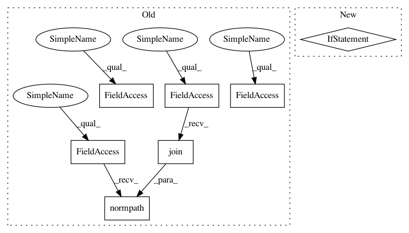

566bb6fa0b6152916c04667b9cff67648555896e,Lib/sandbox/svm/tests/test_classification.py,,,#,5
Before Change
// XXX remove this
import os, sys
sys.path.insert(0, os.path.normpath(os.path.join(os.path.dirname(os.path.abspath(__file__)), "..", "..")))
import svm
import numpy as N
After Change
def check_nu_train(self):
pass
if __name__ == "__main__":
NumpyTest().run()
In pattern: SUPERPATTERN
Frequency: 3
Non-data size: 7
Instances
Project Name: scipy/scipy
Commit Name: 566bb6fa0b6152916c04667b9cff67648555896e
Time: 2006-07-07
Author: fullung@localhost
File Name: Lib/sandbox/svm/tests/test_classification.py
Class Name:
Method Name:
Project Name: ilastik/ilastik
Commit Name: 219459f15476426276e24329cdb6f091b5f7cf41
Time: 2019-06-26
Author: tomaz.vieira@embl.de
File Name: ilastik/applets/dataSelection/dataSelectionSerializer.py
Class Name: DataSelectionSerializer
Method Name: importStackAsLocalDataset
Project Name: scipy/scipy
Commit Name: 566bb6fa0b6152916c04667b9cff67648555896e
Time: 2006-07-07
Author: fullung@localhost
File Name: Lib/sandbox/svm/tests/test_libsvm.py
Class Name:
Method Name:
Project Name: scipy/scipy
Commit Name: 566bb6fa0b6152916c04667b9cff67648555896e
Time: 2006-07-07
Author: fullung@localhost
File Name: Lib/sandbox/svm/tests/test_classification.py
Class Name:
Method Name: